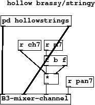
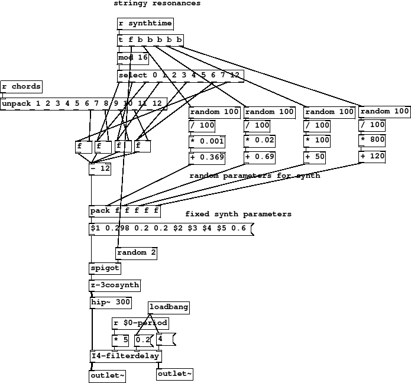
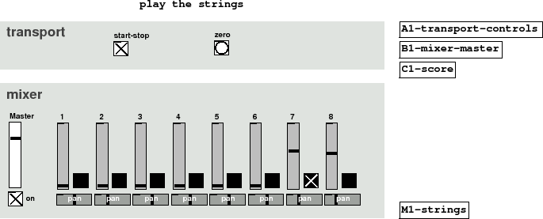

Subsections
Figure 42 summary
- hollow brassy/stringy
- randomised synth parameters
- note selector
- fixed synth parameters
- usual synth abstraction
An extremely simple wrapper, all the interesting stuff is in the [hollowstrings]
subpatch.
Figure 42:
M1-strings
|

|
M1-strings.pd
Figure 43 summary
- random parameters for synth
- fixed synth parameters
Just to show that you don't always have to break up your code into
neat boxes for synths, sequencer and effects here is a strange
instrument that is all in the same abstraction. It uses the familiar
[z-3cosynth] and operates on notes 7 and 8 of the chord an
octave down.
Sometimes when exploring a new synth you might like to hook up
a set of objects as on the top right of this patch, which generate
random parameters within a fixed range. This setup produces
a constantly changing variation on a string-like sound, somewhat
hollow and scrapey. See how the dynamic parameters are freely interleaved with fixed
ones in the substitution.
Figure 43:
M2-hollowstrings
|

|
M2-hollowstrings.pd
Figure 44 summary
This part sounds quite weird alone. It was designed with the rest
of the mix playing and fits in by offering some tones that are
inharmonic and much more organic than the rest.
It has an ambiguous timbre, sometimes stringy and sometimes more brass-like,
but it does the job of pulling together some of the more disparate
higher bits by providing ground between them.
Figure 44:
M3-strings
|

|
M3-strings-play.pd
M3-strings-play.ogg
Andy Farnell
http://obiwannabe.co.uk/